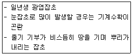

조경기능사 (2013-01-27 기출문제)
1과목: 조경일반
1. 다음 중 조선시대 중엽 이후에 정원양식에 가장 큰 영향을 미친 사상은?
- 음양오행설
- 신선설
- 자연복귀설
- 임천회유설
(정답률: 83%)

2. 다음 중 일본에서 가장 먼저 발달한 정원 양식은?
- 고산수식
- 회유임천식
- 다정
- 축경식
(정답률: 72%)
3. 공공의 조경이 크게 부각되기 시작한 때는?
- 고대
- 중세
- 근세
- 군주시대
(정답률: 83%)
4. 골프장에서 우리나라 들잔디를 사용하기가 가장 어려운 지역은?
- 페어웨이
- 러프
- 티
- 그린
(정답률: 80%)
5. 다음 중 몰(mall)에 대한 설명으로 옳지 않은 것은?
- 도시환경을 개선하는 한 방법이다.
- 차량은 전혀 들어갈 수 없게 만들어진다.
- 보행자 위주의 도로이다.
- 원래의 뜻은 나무그늘이 있는 산책길이란 뜻이다.
(정답률: 81%)
6. 프랑스의 르 노트르(Le Notre)가 유학하여 조경을 공부한 나라는?
- 이탈리아
- 영국
- 미국
- 스페인
(정답률: 82%)
7. 조경의 대상을 기능별로 분류해 볼 때 「자연공원」에 포함되는 것은?
- 묘지공원
- 휴양지
- 군립공원
- 경관녹지
(정답률: 75%)
8. 통일신라 문무왕 14년에 중국의 무산 12봉을 본 딴 산을 만들고 화초를 심었던 정원은?
- 비원
- 안압지
- 소쇄원
- 향원지
(정답률: 88%)
9. 다음 중 중국 4대 명원(四大名園)에 포함되지 않는 것은?
- 작원
- 사자림
- 졸정원
- 창랑정
(정답률: 71%)
10. 우리나라의 산림대별 특징 수종 중 식물의 분류학상 한림대(cold temperate forest)에 해당되는 것은?
- 아왜나무, 소나무
- 구실잣밤나무
- 붉가시나무
- 잎갈나무
(정답률: 56%)
11. 도시공원 및 녹지 등에 관한 법률에 의한 어린이공원의 기준에 관한 설명으로 옳은 것은?
- 유치거리는 500미터 이하로 제한한다.
- 1개소 면적은 1200m2 이상으로 한다.
- 공원시설 부지면적은 전체 면적의 60% 이하로 한다.
- 공원구역 경계로부터 500미터 이내에 거주하는 주민 250명 이상의 요청시 어린이공원조성계획읜 정비를 요청할 수 있다.
(정답률: 77%)
12. 디자인 요소를 같은 양, 같은 간격으로 일정하게 되풀이하여 움직임과 율동감을 느끼게 하는 것으로 리듬의 유형 중 가장 기본적인 것은?
- 반복
- 점층
- 방사
- 강조
(정답률: 90%)
13. 계단의 설계 시 고려해야 할 기준으로 옳지 않은 것은?
- 계단의 경사는 최대 30 ~ 35˚가 넘지 않도록 해야 한다.
- 단 높이를 H, 단 너비를 B로 할 때 2H + B = 60 ~ 65cm 가 적당하다.
- 진행 방향에 따라 중간에 1인용일 때 단 너비 90 ~ 110cm 정도의 계단 참을 설치한다.
- 계단의 높이가 5m 이상이 될 때에만 중간에 계단참을 설치한다.
(정답률: 82%)
14. 다음 중 조경에 관한 설명으로 옳지 않은 것은?
- 주택의 정원만 꾸미는 것을 말한다.
- 경관을 보존 정비하는 종합과학이다.
- 우리의 생활환경을 정비하고 미화하는 일이다.
- 국토 전체 경관의 보존, 정비를 과학적이고 조형적으로 다루는 기술이다.
(정답률: 89%)
15. 다음 중 경복궁 교태전 후원과 관계없는 것은?
- 화계가 있다.
- 상량전이 있다.
- 아미산이라 칭한다.
- 굴뚝은 육각형이 4개가 있다.
(정답률: 70%)
2과목: 조경재료
16. 다음 조경용 소재 및 시설물 중에서 평면적 재료에 가장 적합한 것은?
- 잔디
- 조경수목
- 퍼걸러
- 분수
(정답률: 91%)
17. 콘크리트용 혼화재로 실리카흉(Silica fume)을 사용한 경우 효과에 대한 설명으로 잘못된 것은?
- 내화학약품성이 향상된다.
- 단위수량과 건조수축이 감소되된다.
- 알칼리 골재반응의 억제효과가 있다.
- 콘크리트의 재료분리 저항성, 수밀성이 향상된다.
(정답률: 51%)
18. 다음 중 열경화성 수지의 종류와 특징 설명이 옳지 않은 것은?
- 페놀수지 : 강도 · 전기전열성 · 내산성 · 내수성 모두 양호하나 내알칼리성이 약하다.
- 멜라민수지 : 요소수지와 같으나 경도가 크고 내수성은 약하다.
- 우레탄수지 : 투광성이 크고 내후성이 양호하며 착색이 자유롭다.
- 실리콘수지 : 열절연성이 크고 내약품성 · 내후성이 좋으며 전기적 성능이 우수하다.
(정답률: 51%)
19. 목재가 통상 대기의 온도, 습도와 평형된 수분을 함유한 상태의 함수율은?
- 약 7%
- 약 15%
- 약 20%
- 약 30%
(정답률: 85%)
20. 목재의 심재와 변재에 관한 설명으로 옳지 않은 것은?
- 심재는 수액의 통로이며 양분의 저장소이다.
- 심재의 색깔은 짙으며 변재의 색깔은 비교적 엷다.
- 심재는 변재보다 단단하여 강도가 크고 신축 등 변형이 적다.
- 변재는 심재 외측과 수피 내측 사이에 있는 생활세포의 집합이다.
(정답률: 73%)
21. 점토, 석영, 장석, 도석 등을 원료로 하여 적당한 비율로 배합한 다음 높은 온도로 가열하여 유리화될 때까지 충분히 구워 굳힌 제품으로서, 대게 흰색 유리질로서 반투명하여 흡수성이 없고 기계적 강도가 크며, 때리면 맑은 소리를 내는 것은?
- 토기
- 자기
- 도기
- 석기
(정답률: 80%)
22. 구조재료의 용도상 필요한 물리 · 화학적 성질을 강화시키고, 미관을 증진시킬 목적으로 재료의 표면에 피막을 형성시키는 액체 재료를 무엇이라고 하는가?
- 도료
- 착색
- 강도
- 방수
(정답률: 90%)
23. 겨출철 화단용으로 가장 알맞은 식물은?
- 팬지
- 피튜니아
- 샐비어
- 꽃양배추
(정답률: 93%)
24. 수목의 규격을 'H x W'로 표시하는 수종으로만 짝지어진 것은?
- 소나무, 느티나무
- 회양목, 장미
- 주목, 철쭉
- 백합나무, 향나무
(정답률: 58%)
25. 정적인 상태의 수경경관을 도입하고자 할 때 바른 것은?
- 하천
- 계단 폭포
- 호수
- 분수
(정답률: 86%)
26. 다음 중 석탄을 235 ~ 315℃ 에서 고온건조하여 얻은 타르 제품으로서 독성이 적고 자극적인 냄새가 있는 유성 목재 방부제는?
- 콜타르
- 크레오소트유
- 플로오르화나트륨
- 펜타클로르페놀
(정답률: 73%)
27. 다음 중 목재 내 할렬(checks)은 어느 때 발생하는가?
- 목재의 부분별 수축이 다를 때
- 건조 초기에 상태습도가 높을 때
- 함수율이 높은 목재를 서서히 건조할 때
- 건조 응력이 목재의 횡인장강도 보다 클 때
(정답률: 61%)
28. 다음 목재 접착제 중 내수성이 큰 순서대로 바르게 나열된 것은?
- 요소수지 > 아교 > 페놀수지
- 아교 > 페놀수지 > 요소수지
- 페놀수지 > 요소수지 > 아교
- 아교 > 요소수지 > 페놀수지
(정답률: 78%)
29. 다음 석재 중 일반적으로 내구연한이 가장 짧은 것은?
- 석회암
- 화강석
- 대리석
- 석영암
(정답률: 70%)
30. 여름철에 강한 햇빛을 차단하기 위해 식재되는 수목을 가리키는 것은?
- 녹음수
- 방풍수
- 차폐수
- 방음수
(정답률: 91%)
31. 다음 중 조경수의 이식에 대한 적응이 가장 쉬운 수종은?
- 벽오동
- 전나무
- 섬잣나무
- 가시나무
(정답률: 58%)
32. 건물주위에 식재시 양수와 음수의 조합으로 되어 있는 수종들은?
- 눈주목, 팔손이나무
- 사철나무, 전나무
- 자작나무, 개비자나무
- 일본잎갈나무, 향나무
(정답률: 48%)
33. 강(鋼)과 비교한 알루미늄의 특징에 대한 내용 중 옳지 않은 것은?
- 강도가 작다.
- 비중이 작다.
- 열팽창율이 작다.
- 전기 전도율이 높다.
(정답률: 55%)
34. 다음 중 낙우송의 설명으로 옳지 않은 것은?
- 잎은 5 ~ 10cm 길이로 마주나는 대생이다.
- 소엽은 편평한 새의 깃모양으로서 가을에 단풍이 든다.
- 열매는 둥근 달걀 모양으로 길이 2 ~ 3cm 지름 1.8 ~ 3.0cm의 암갈색이다.
- 종자는 삼각형의 각모에 광택이 있으며 날개가 있다.
(정답률: 55%)
35. 두께 15cm 미만이며, 폭이 두께의 3배 이상이 판 모양의 석재를 무엇이라고 하는가?
- 각석
- 판석
- 마름돌
- 견치돌
(정답률: 85%)
3과목: 조경 시공 및 관리
36. 다음 제초제 중 잡초와 작물 모두를 살멸시키는 비선택성 제초제는?
- 디캄바액제
- 글리포세이트액제
- 펜티온유제
- 에터폰액제
(정답률: 58%)
37. 소나무류의 순따기에 알맞은 적이는?
- 1 ~ 2월
- 3 ~ 4월
- 5 ~ 6월
- 7 ~ 8월
(정답률: 84%)
38. 다음 설명하는 잡초로 옳은 것은?

- 메꽃
- 한련초
- 가막사리
- 사마귀풀
(정답률: 67%)
39. 다음 가지다듬기 중 생리조정을 위한 가지 다듬기는?
- 병·해충 피해를 입은 가지를 잘라 내었다.
- 향나무를 일정한 모양으로 깎아 다듬었다.
- 늙은 가지를 젊은 가지로 갱신 하였다
- 이식한 정원수의 가지를 알맞게 잘라 냈다.
(정답률: 69%)
40. 평판측량에서 평판을 정치하는데 생기는 오차 중 측량결과에 가장 큰 영향을 주므로 특히 주의해야 할 것은?
- 수평맞추기 오차
- 중심맞추기 오차
- 방향맞추기 오차
- 엘리데이드의 수준기에 따른 오차
(정답률: 69%)
41. 조경설계기준상 공동으로 사용되는 계단의 경우 높이가 2m를 넘는 계단에는 2m 이내마다 당해 계단의 유효폭 이상의 폭으로 너비 얼마 이상의 참을 두어야 하는가? (단, 단높이는 18cm 이하, 단너비는 26cm 이상이다)
- 70cm
- 80cm
- 100cm
- 120cm
(정답률: 71%)
42. 잔디밭을 조성하려 할 때 뗏장붙이는 방법으로 틀린 것은?
- 뗏장붙이기 전에 미리 땅을 갈고 정지(整地)하여 밑거름을 넣는 것이 좋다.
- 뗏장붙이는 방법에는 전면붙이기, 어긋나게붙이기, 줄붙이기 등이 있다.
- 줄붙이기나 어긋나게붙이기는 뗏장을 절약하는 방법이지만, 아름다운 잔디밭이 완성되기까지에는 긴 시간이 소요된다.
- 경사면에는 평떼 전면붙이기를 시행한다.
(정답률: 74%)
43. 시멘트의 각종 시험과 연결이 옳은 것은?
- 비중시험 - 길모아 장치
- 분말도시험 - 루사델리 비중병
- 응결시험 - 블레인법
- 안정성시험 - 오토클레이브
(정답률: 55%)
44. 다음 중 식엽성(食葉性) 해충이 아닌 것은?
- 솔나방
- 텐트나방
- 복숭아명나방
- 미국흰불나방
(정답률: 60%)
45. 경석(景石)의 배석(配石)에 대한 설명으로 옳은 것은?
- 원칙적으로 정원 내에 눈에 띄이지 않는 곳에 두는 것이 좋다.
- 차경(借景)의 정원에 쓰면 유효하다.
- 자연석보다 다소 가공하여 형태를 만들어 쓰도록 한다.
- 입석(立石)인 때에는 역삼각형으로 놓는 것이 좋다.
(정답률: 67%)
46. 다음 시멘트의 종류 중 혼합시멘트가 아닌 것은?
- 알루미나 시멘트
- 플라이 애시 시멘트
- 고로 슬래그 시멘트
- 포틀랜드 포졸란 시멘트
(정답률: 66%)
47. 조형(造形)을 목적으로 한 전정을 가장 잘 설명한 것은?
- 고사지 또는 병지를 제거한다.
- 밀생한 가지를 솎아준다.
- 도장지를 제거하고 결가지를 조정한다.
- 나무 원형의 특징을 살려 다듬는다.
(정답률: 86%)
48. 다져진 잔디밭에 공기 유통이 잘되도록 구멍을 뚫는 기계는?
- 소드 바운드(sod bound)
- 론 모우어(lawn mower)
- 론 스파이크(lawn spike)
- 레이크(take)
(정답률: 81%)
49. 지하층의 배수를 위한 시스템 중 넓고 평탄한 지역에 주로 사용되는 것은?
- 어골형, 평행형
- 즐치형, 선형
- 자연형
- 차단법
(정답률: 85%)
50. 다음 중 흙쌓기에서 비탈면의 안정효과를 가장 크게 얻을 수 있는 경사는?
- 1 : 0.3
- 1 : 0.5
- 1 : 0.8
- 1 : 1.5
(정답률: 71%)
51. 다음 중 들잔디의 관리 설명으로 옳지 않은 것은?
- 들잔디의 깎기 높이는 2~3cm로 한다.
- 뗏밥은 초겨울 또는 해동이 되는 이른 봄에 준다
- 해충은 황금충류가 가장 큰 피해를 준다.
- 병은 녹병의 발생이 많다.
(정답률: 71%)
52. 생울타리를 전지 · 전정 하려고 한다. 태양의 광선을 골고루 받게 하여 생울타리의 밑가지 생육을 건전하게 하려면 생울타리의 단면 모양은 어떻게 하는 것이 가장 적합한가?
- 삼각형
- 사각형
- 팔각형
- 원형
(정답률: 73%)
53. 설계도서에 포함되지 않는 것은?
- 물량내역서
- 공사시방서
- 설계도면
- 현장사진
(정답률: 77%)
54. 다음 중 파이토플라스마에 의한 수목병은?
- 뽕나무 오갈병
- 잣나무 털녹병
- 밤나무 뿌리혹병
- 낙엽송 끝마름병
(정답률: 71%)
55. 골재알의 모양을 판정하는 척도인 실적율(%)을 구하는 식으로 옳은 것은?
- 공극률 - 100
- 100 - 공극률
- 100 - 조립률
- 조립률 - 100
(정답률: 72%)
56. 건물이나 담장 앞 또는 원로에 따라 길게 만들어지는 화단은?
- 모듬화단
- 경재화단
- 카펫화단
- 침상화단
(정답률: 78%)
57. 표준형 벽돌을 사용하여 1.5B로 시공한 담장의 총 두꼐는? (단, 줄눈의 두께는 10mm 이다.)
- 210mm
- 270mm
- 290mm
- 330mm
(정답률: 77%)
58. 수간에 약액 주입시 구멍 뚫는 각도로 가장 적절한 것은?
- 수평
- 0 ~ 10
- 20 ~ 30
- 50 ~ 60
(정답률: 84%)
59. 토양의 입경조성에 의한 토양의 분류를 무엇이라고 하는가?
- 토성
- 토양통
- 토양반응
- 토양분류
(정답률: 69%)
60. 비료의 3요소가 아닌 것은?
- 질소(N)
- 인산(P)
- 칼슘(Ca)
- 칼륨(K)
(정답률: 86%)
음양오행설은 세계를 구성하는 모든 것이 음양(음력과 양력)과 오행(목, 화, 토, 금, 수)으로 이루어져 있으며, 이것들이 상호작용하면서 모든 사물이 생성되고 변화한다는 이론입니다. 이에 따라 정원양식에서도 음양오행설의 영향을 받아, 정원의 구성과 식재, 배치 등이 음양과 오행의 균형을 맞추어 조화롭게 구성되었습니다. 따라서 조선시대 중엽 이후에 정원양식에 가장 큰 영향을 미친 사상은 음양오행설이었습니다.